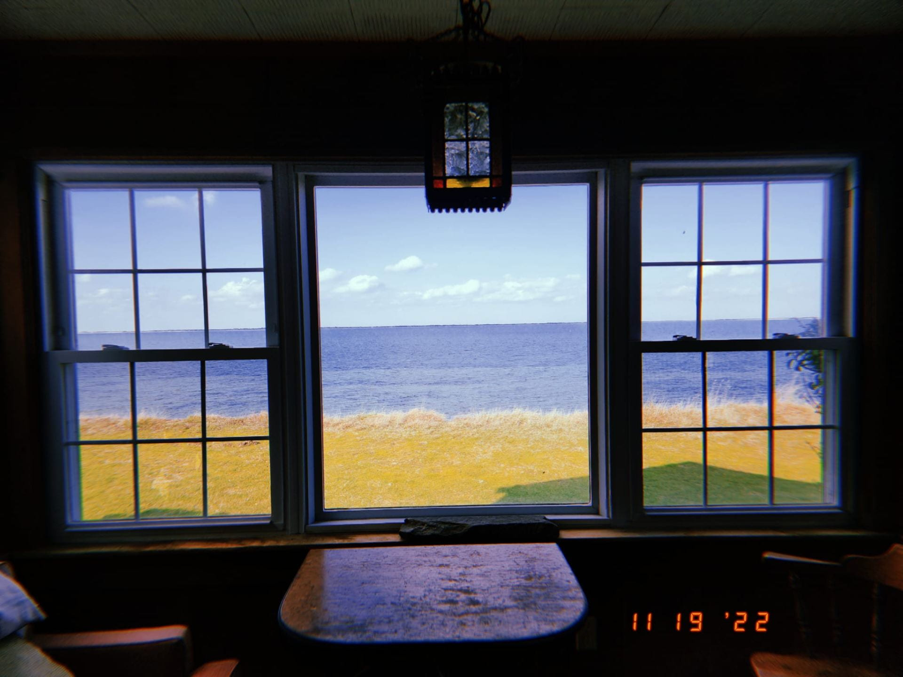

The UMB Field Station
Field Biology is the name of the game when it comes to wild birds. You simply cannot hope to study the ecology of these birds from the inside of a brick building. You have to venture out into the woods, shores, and oceans to find them. They often don’t come to you, which means exploring quite challenging places, while the birds are 50 feet in the air, or floating atop the waves. You are often cold, wet, hungry, and in environments that more than a few people would consider “less than optimal”. Yet the moment you see one of these gulls, ducks, or finches soaring, bouncing, or flinting through the air, the reason why you are out there in the first place becomes clear. Today I want to tell you about the unique resource that UMB has at its disposal.
Some of my preliminary research has taken me out of the university, where I am usually holed up reading the latest influenza paper, to the small island of Nantucket. Let me be the first to tell you this island is amazing, a short ferry ride and you are in a new world. First of all, it has this wonderful small fishing town atmosphere with beautiful buildings and amazing people. Secondly, this island is the home of so many different conservation groups. From the “Linda Loring Nature Foundation” to the “Marine Mammal Alliance Nantucket” there is a wide array of science happening on this relatively small crescent moon of land. Thirdly, the biodiversity of this island makes it an excellent place to study birds. There are so many places to get close to ducks and gulls in their native landscape.
However, simply going to an Island with no support can make a trip much more challenging, which brings me to the main thrust of this post. UMASS Boston has the amazing privilege of having a field station located on the Island! Not only that but it is managed by one of the nicest people I have ever met, Yvonne. She has given so much of her time to the support of researchers like my lab and created an environment where science and conservation can flourish. I know the rest of my lab would agree in saying our research would not be possible without the field station and its amazing manager. Below is a picture of the view from the main window of the station and as you can see it’s quite stunning. One can see bufflehead ducks, herring gulls, and many more simply by sitting at this prime location.
The UMB Field Station January 20, 2023 Jonathan B Dain Field Biology is the name of the game when it comes to wild birds. You simply cannot hope to study the ecology of these birds from the inside of a brick building. You have to venture out into the woods, shores, and oceans to find them. They often don’t come to you, which means exploring quite challenging places, while the birds are 50 feet in the air, or floating atop the waves. You are often cold, wet, hungry, and in environments that more than a few people would consider “less than optimal”. Yet the moment you see one of these gulls, ducks, or finches soaring, bouncing, or flinting through the air, the reason why you are out there in the first place becomes clear. Today I want to tell you about the unique resource that UMB has at its disposal.
Some of my preliminary research has taken me out of the university, where I am usually holed up reading the latest influenza paper, to the small island of Nantucket. Let me be the first to tell you this island is amazing, a short ferry ride and you are in a new world. First of all, it has this wonderful small fishing town atmosphere with beautiful buildings and amazing people. Secondly, this island is the home of so many different conservation groups. From the “Linda Loring Nature Foundation” to the “Marine Mammal Alliance Nantucket” there is a wide array of science happening on this relatively small crescent moon of land. Thirdly, the biodiversity of this island makes it an excellent place to study birds. There are so many places to get close to ducks and gulls in their native landscape.
However, simply going to an Island with no support can make a trip much more challenging, which brings me to the main thrust of this post. UMASS Boston has the amazing privilege of having a field station located on the Island! Not only that but it is managed by one of the nicest people I have ever met, Yvonne. She has given so much of her time to the support of researchers like my lab and created an environment where science and conservation can flourish. I know the rest of my lab would agree in saying our research would not be possible without the field station and its amazing manager. Below is a picture of the view from the main window of the station and as you can see it’s quite stunning. One can see bufflehead ducks, herring gulls, and many more simply by sitting at this prime location.

If you want to learn more about the amazing things going on here on Nantucket at the UMB field station you can check it out on their Facebook page linked below. Until next time keep your eyes to the sky.
Link to the Nantucket Field Station: https://www.facebook.com/NantucketFieldStation
Cheers, Jonathan